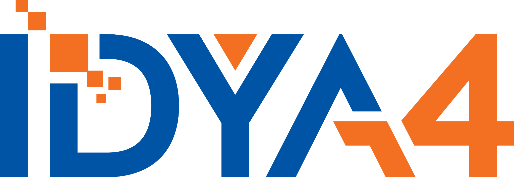

RxConnect
Turn fragmented data into actionable intelligence.
RxConnect unifies prescription, clinical, pharmacy, claims, and related data to identify risk, close gaps, and support timely intervention.
Learn about RxConnectConnected data. Healthier tomorrow.
IDYA4 is a software company that unites fragmented healthcare data into connected intelligence, enabling real-time intervention and healthier communities.

Turn fragmented data into actionable intelligence.
RxConnect unifies prescription, clinical, pharmacy, claims, and related data to identify risk, close gaps, and support timely intervention.
Learn about RxConnectConnect what matters.
We make data work across systems, organizations, and partners using standards-based approaches and proven interoperability frameworks.
Explore InteroperabilityHealthier people. Stronger communities.
Transform data into population insights that support proactive care, identify risk, address gaps, and improve outcomes at scale.
See the ImpactBuilt for trust. Designed for what’s next.
IDYA4 software is designed for secure, scalable information exchange and enterprise environments where reliability and interoperability matter.
Our Approach